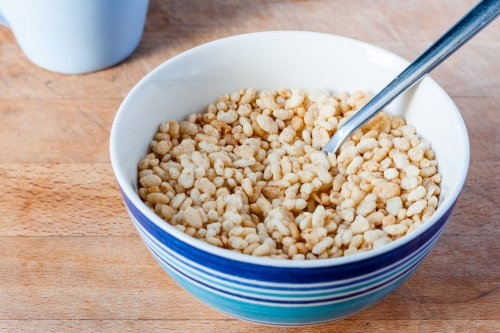

Cereal Jelai
Sereal jelai adalah gandum dengan tekstur kenyal dan rasa seperti kacang. Jelai mengandung banyak nutrisi dan mudah dipadukan dengan makanan lain. Tak hanya itu, jelai juga bermanfaat untuk menurunkan kadar kolesterol serta menyehatkan jantung. Apa manfaat dari jelai?
Biji barley juga dikenal sebagai jelai. Barley banyak dijadikan bahan baku dalam roti, minuman, dan aneka masakan lainnya. Barley memiliki banyak manfaat untuk kesehatan seperti menurunkan gula darah, tekanan darah, dan kolesterol, serta membantu penurunan berat badan.